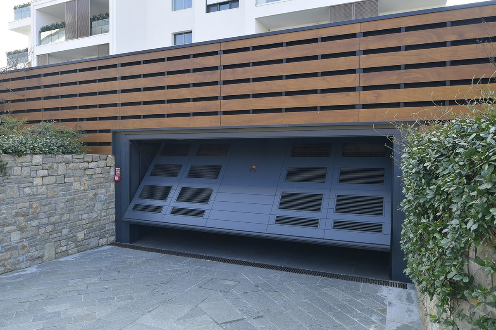
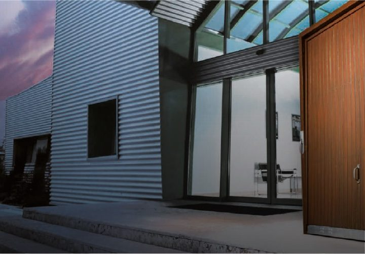

Sektionaltor
Läuft senkrecht nach oben und unter die Decke. Volle Durchfahrtsbreite, kein Schwenkbereich vor der Garage.
- Ideal bei kurzen Einfahrten
- Wärmegedämmte Paneele
- Großsicke, Mittelsicke, Kassette oder glatt
Sektionaltor, Schwingtor oder Flügeltor: in Echtholz, Stahl oder Aluminium, in jeder RAL-Farbe, mit Antrieb und Montage durch unsere eigenen Techniker.

Das Garagentor ist oft die größte Fläche an der Straßenseite Ihres Hauses. Deshalb planen wir es wie ein Bauteil der Fassade: passend zu Haustür, Fenstern und Dach, gefertigt auf das Millimetermaß Ihrer Öffnung.
Welche Bauart passt, hängt von Sturzhöhe, Einfahrt und Ihrem Geschmack ab. Wir zeigen Ihnen vor Ort, was möglich ist.
Läuft senkrecht nach oben und unter die Decke. Volle Durchfahrtsbreite, kein Schwenkbereich vor der Garage.

Ein durchgehendes Torblatt, das nach oben kippt. Die klassische Bauart, auch in Echtholz mit durchgehender Maserung.

Öffnet zur Seite. Praktisch, wenn die Decke frei bleiben soll oder die Garage als Werkstatt genutzt wird.

Unsere Echtholz-Garagentore werden in einer Manufaktur in den Dolomiten gefertigt und über DTT in Deutschland geplant, geliefert und montiert. Jedes Tor ist ein Unikat: Holzart, Maserung, Lasur oder Deckfarbe wählen Sie.
Für alle, die es pflegeleichter mögen, gibt es dieselben Designs auch in Stahl und Aluminium mit Holzdekor.
Muster und Holzarten anfragenJedes Tor wird auf Ihre Öffnung gefertigt. Auch Sonderbreiten, Schrägen und niedrige Stürze sind lösbar.
Leiser Elektroantrieb mit Handsender, Funk-Codetaster oder App. Auf Wunsch mit Anbindung an Ihr Smart Home.
Aufschiebesicherung, Fingerklemmschutz und einbruchhemmende Ausführungen je nach Modell.
Gedämmte Paneele und umlaufende Dichtungen halten Garage und angrenzende Räume temperiert.
Fensterreihen oder Glasfelder bringen Tageslicht in die Garage, wahlweise klar, satiniert oder getönt.
Eigene Servicetechniker für Montage, jährliche Prüfung und schnelle Hilfe im Störfall.
Richtwerte für die Planung. Die genaue Ausführung legen wir beim Aufmaß mit Ihnen fest.
| Bauarten | Sektionaltor, Schwingtor, Flügeltor, Seitensektionaltor |
|---|---|
| Breite und Höhe | Nach Maß, Einzel- und Doppelgaragen, Sonderformate auf Anfrage |
| Material | Echtholz (Fichte, Lärche, Eiche und weitere), Stahl, Aluminium |
| Oberflächen | Alle RAL-Farben, Holzdekore, Lasuren, Feinstruktur, Seidenglanz oder matt |
| Design | Großsicke, Mittelsicke, Kassette, Lamellen, glatt oder individuell |
| Antrieb | Elektrisch mit Handsender, Codetaster, App; manuell möglich |
| Extras | Lichtausschnitte, Schlupftür, Lüftungsgitter, Einbruchhemmung |
| Leistung | Beratung, Aufmaß, Lieferung, Montage, Wartung und Reparatur |


Bei kurzen Einfahrten und wenig Platz vor der Garage ist das Sektionaltor die beste Wahl. Schwingtore brauchen etwas Schwenkraum, bieten dafür eine große, ruhige Fläche für Holz und Design. Flügeltore eignen sich, wenn die Decke frei bleiben soll. Wir prüfen das beim Aufmaß mit Ihnen.
Ja. Wir bauen das alte Tor aus, entsorgen es fachgerecht und montieren das neue Tor in der Regel an einem Tag. Antrieb und Verkabelung übernehmen wir ebenfalls.
Nach dem Aufmaß erhalten Sie ein Angebot. Die Fertigung eines Maßtors dauert je nach Modell und Material mehrere Wochen. Den Montagetermin stimmen wir mit Ihnen ab, sobald der Liefertermin feststeht.
Echtholz braucht je nach Wetterseite alle paar Jahre einen neuen Anstrich mit Lasur oder Deckfarbe. Wir beraten Sie zum passenden Aufbau und bieten die Auffrischung auch als Service an.
Rufen Sie an oder senden Sie uns Maße und Fotos. Wir melden uns innerhalb eines Werktags.